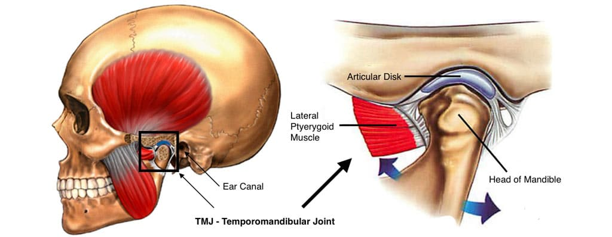

TMJ Disorder

CAUSES
TMJ disorder can be caused by injury to the jaw joints or surrounding tissues. Other TMD causes include:
- Bruxism (teeth grinding/clenching).
-
Dislocation of the disc between the ball and socket joint.
-
Arthritis in the TMJ.
-
Stress.
-
Acute trauma.
-
An improper bite.
SYMPTOMS
TMJ dysfunction is most common in those 20 to 40 years of age and is more common in women than in men. Some of the most common TMJ symptoms include:
- Jaw pain.
-
Headaches.
-
Earaches.
-
Pain in the neck or shoulders.
-
Difficulty opening your mouth wide.
-
Jaws that "lock" in the open- or closed-mouth position.
-
Clicking, popping, or grating sounds in the jaw joint when opening or closing your mouth.
-
A tired feeling in your face.
-
Difficulty chewing.
-
Tinnitus, or ringing in your ears.
-
Changes in the way your teeth fit together.
-
Swelling on the side of your face.
-
Tooth pain.
DIAGNOSIS
radiographs (X-rays) may be taken to view the jaw joints and determine the extent of damage. These may include:
- Panoramic X-rays. This type of dental X-ray shows a broad overview of your teeth, jawbone and TMJs.
-
CBCT scans. Cone beam computed tomography (CBCT) scans capture thousands of images of your teeth, jaws, facial bones and sinuses. These pictures are then stitched together for a detailed 3-D image. Dental CT scans give your healthcare provider a more detailed view of your facial anatomy.
-
MRI scans. In some cases, magnetic resonance imaging (MRI) may be used to view soft tissues in and around the jaw joints. These images show the position of the disk, inflammation and possible jaw locking. This can tell your healthcare provider if the TMJ disc is functioning properly and in good condition.
TREATMENTS
Treatments range from simple self-care practices and conservative treatments to injections and open surgery. Most experts agree that treatment should begin with conservative, nonsurgical therapies, with surgery left as the last resort